정보통신산업기사 (2015-10-04 기출문제)
1과목: 디지털전자회로
1. 다음 중 직렬형 정전압 회로의 특징으로 틀린 것은?
- 부하저항이 클 때 효율은 병렬형에 비교하여 높다.
- 출력전압의 넓은 범위에서 쉽게 설계될 수 있다.
- 증폭단을 증가시킴으로써 출력저항 및 전압 안정 계수를 작게 할 수 있다.
- 출력단자가 단락되더라도 트랜지스터가 파괴되는 경우는 없다.
(정답률: 73%)

2. 다음 중 정류회로에서 리플 함유율을 감소시키는 방법으로 적합하지 않은 것은?
- 입력전원의 주파수를 낮게 한다.
- 반파정류회로보다 전파정류회로를 사용한다.
- 콘덴서입력형 평활회로에서 콘덴서 용량을 크게 한다.
- 초크입력형 평활회로에서 초크의 인덕턴스를 크게 한다.
(정답률: 70%)
3. 다음 중 가장 효율이 좋은 증폭방식은?
- A급
- B급
- C급
- AB급
(정답률: 86%)
4. 다음 회로의 설명으로 틀린 것은? (단, hfe1=Q1의 순방향 전류 증폭률, hfe2=Q2의 순방향 전류 증폭률)
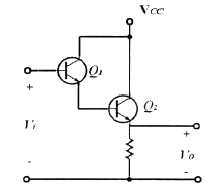
- 트랜지스터 Q1과 Q2는 Darlington 접속이다.
- 전류증폭률은 (h+hfe1)(1+hfe2)이다.
- 입력저항은 대단히 높고 출력저항은 낮다.
- 전압이득이 1보다 크다.
(정답률: 76%)
5. 전압증폭도(AV)가 5,000인 증폭기에 부궤환을 걸어 증폭기 이득(Af)이 800일 경우 궤환율은 얼마인가?
- 0.001⑤[%]
- 0.01⑤[%]
- 0.1⑤[%]
- 1.⑤[%]
(정답률: 60%)
6. 다음은 회로의 4단자망을 h 파라미터로 나타낸 것이다. 입력개방 역방향 전압비는? (여기서 입력단은 1이고, 출력단은 2로 표시한 것이다.)
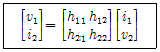
- h11
- h12
- h21
- h22
(정답률: 69%)
7. 음 중 LC 병렬 공진 회로에서 공진주파수[Hz]를 구하는 식은?
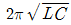
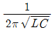
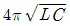
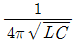
(정답률: 79%)
8. 다음 중 플립플롭(Flip-Flop)과 같은 동작하는 회로는?
- LC 발진기
- 수정 발진기
- 쌍안정 멀티바이브레이터
- 단안정 멀티바이브레이터
(정답률: 66%)
9. 수정 발진기는 어떤 현상을 이용하는가?
- 피에조(Piezo) 현상
- 과도(Transent) 현상
- 지연(Delay) 현상
- 히스테리시스(Hysteresis) 현상
(정답률: 68%)
10. 다음 설명에 적합한 회로는?
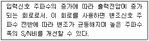
- FM변조회로
- 전치보상기
- AM변조회로
- 프리엠파시스
(정답률: 67%)
11. 반송파 전력이 60[kW]인 경우 92[%]로 진폭 변조하였을 때 피변조파 전력은 약 얼마인가?
- 85.4[kW]
- 93.5[kW]
- 122.8[kW]
- 145.2[kW]
(정답률: 49%)
12. 다음 중 슈미트 트리거 회로를 사용하여 변환할 수 없는 파형은?
- 정현파를 구형파로 변환
- 삼각파를 구형파로 변환
- 삼각파를 펄스파로 변환
- 구형파를 정현파로 변환
(정답률: 66%)
13. TTL 게이트에서 스위칭 속도를 높이기 위해 사용되는 다이오드는?
- 바랙터 다이오드
- 제너 다이오드
- 쇼트키 다이오드
- 정류 다이오드
(정답률: 70%)
14. 10진수 3의 BCD코드와 4의 BCD코드를 더한 3초과로 맞는 것은?
- 0111
- 1010
- 1011
- 0110
(정답률: 67%)
15. 다음 중 가중치 코드(Weighted Code)의 종류가 아닌 것은?
- 8421 코드
- 2421 코드
- 그레이 코드(Gray Code)
- 링카운터(Ring Counter) 코드
(정답률: 69%)
16. 다음 논리식을 간략화한 것으로 옳은 것은?
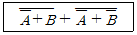
- A+B
- AB
- A
- B
(정답률: 76%)
17. 다음 중 링 카운터와 존슨 카운터의 구성상 차이점은 무엇인가?
- 구성상의 차이점이 없다.
- 최종 출력에서 초단 입력으로 궤환시킬 때 Q 또는
 공급 방법이 다르다.
공급 방법이 다르다. - 두개의 카운터 모두 클럭 신호를 Inverting 시킨다.
- 두개의 카운터 모두 각 단마다 Q와
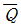
를 교차하면서 다음 단 카운터에 공급한다.
(정답률: 66%)
18. 다음 디지털 IC의 종류 중 Fan-Out이 큰 순서로 옳은 것은?
- TTL ＞ TRL ＞ DTL ＞ C-MOS
- C-MOS ＞ TTL ＞ RTL ＞ DTL
- TTL ＞ C-MOS ＞ RTL ＞ DTL
- C-MOS ＞ TTL ＞ DTL ＞ RTL
(정답률: 70%)
19. D 플립플롭을 이용하여 26진 상향 비동기식 계수기를 설계하려고 한다. D 플립플롭은 최소 몇 개가 필요한가?
- 26개
- 13개
- 7개
- 5개
(정답률: 58%)
20. 다음 중 멀티플렉서 표시기호로 옳은 것은?
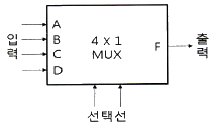
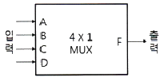
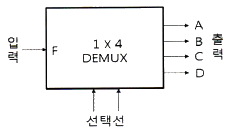
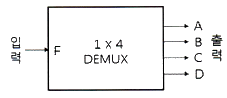
(정답률: 75%)
2과목: 정보통신기기
21. 다음 중 통신제어장치(CCU : Communication Control Unit)의 형태에 따른 분류가 아닌 것은?
- 전처리장치(FEP)
- 중앙처리장치(CPU)
- 원격처리장치(RP)
- 통신제어처리장치(CCP)
(정답률: 82%)
22. 다음 중 다중화기와 집중화기에 대한 설명으로 틀린 것은?
- 부 채널(Sub channel) 할당 방법에서 다중화기는 정적(Static) 할당이고, 집중화기는 동적(Dynamic) 할당 방식이다.
- 개별 회선의 연결시 다중화기는 논리적 연결이고, 집중화기는 물리적 연결이다.
- 부 채널 속도 합에서 다중화기는 고속 링크 채널속도와 같고, 집중화기는 고속 링크 채널 속도와 같거나 크다.
- 제어기는 다중화기는 고정회선 제어 및 논리적 제어이고, 집중화기는 프로세서 제어이다.
(정답률: 56%)
23. 다음 중 SDH(Synchronous Digital Hierarchy)에서 STM-1의 전송속도[Mbps]는?
- 155.52[Mbps]
- 139.26[Mbps]
- 62.08[Mbps]
- 50.84[Mbps]
(정답률: 77%)
24. N 위상 변조에서 동기식 모뎀의 신호 속도가 M[baud/sec]인 경우 비트 속도를 구하는 식은?
- M log2N
- N log2M
- M log10N
- N log10M
(정답률: 82%)
25. 다음 중 다중화 방식의 종류가 아닌 것은?
- 주파수 분할 다중화
- 진폭 분할 다중화
- 시분할 다중화
- 코드 분할 다중화
(정답률: 59%)
26. 광섬유를 전송매체로 100[Mbps]의 전송속도를 제공하는 두 개의 링 구조로 이루어진 것은?
- ADSL
- HDSL
- VDSL
- FDDI
(정답률: 67%)
27. 디지털 데이터를 아날로그 전송 회선에 적합하도록 데이터를 변형하여 먼 거리에 존재하는 컴퓨터나 단말 장치에 전송하기 위해서 필요한 장비는?
- MODEM
- DSU
- CODEC
- CSU
(정답률: 79%)
28. 서로 다른 네트워크 구조를 갖는 컴퓨터간 데이터를 송ㆍ수신할 경우, 이기종 간을 상호 접속하여 통신이 가능하도록 해주는 인터넷워킹 장비가 아닌 것은?
- Transceiver
- Repeater
- Hub
- Router
(정답률: 71%)
29. 전화기에서 사용하는 진동판의 구비조건으로 맞지 않는 것은?
- 자유진동이 적을 것
- 외력에 비례해서 되도록 큰 진폭으로 진동할 것
- 진동판의 평면 면적은 가급적 작을 것
- 온도 변화에 안정적으로 구동할 것
(정답률: 77%)
30. 다음 중 화상회의 시스템에 대한 기능으로 틀린 것은?
- 일반적으로 소프트웨어 기반 영상은 하드웨어 기반에 비해 화질이 좋지 않다.
- 영상신호의 부호화와 복호화를 위해 코덱이 사용된다.
- 고화질의 영상을 전송하기 위한 영상압축 기술이 필요하다.
- 화상회의 시스템은 보안에 강하다.
(정답률: 85%)
31. 다음 중 CATV에 대한 설명으로 옳지 않은 것은?
- 안테나로 수신한 TV신호를 동축케이블 등의 광대역 전송로로 전송한다.
- 난시청 해소를 위한 TV방송의 재송신 및 자체프로그램 방송을 서비스한다.
- CATV는 도시형 CATV, 양방향 CATV 등이 있다.
- CATV의 간선에는 FTTH(Fiber To The Home)가 적용된다.
(정답률: 77%)
32. 다음 중 근거리 무선접속방식으로 저전력을 사용하는 이동통신방식은 어느 것인가?
- Zigbee
- WiFi
- WCDMA
- WiBro
(정답률: 78%)
33. 이동통신기기의 근거리 무선통신방식 중 전송거리 10[cm] 이내에서 쓰기/읽기가 가능한 통신방식은?
- WAN
- WiFi
- NFC
- WLAN
(정답률: 87%)
34. 100[mW]의 신호 전력을 [dBm]으로 환산하면 얼마인가?
- 10[dBm]
- 20[dBm]
- 30[dBm]
- 40[dBm]
(정답률: 71%)
35. 다음 중 위성통신의 특징으로 옳지 않은 것은?
- 서비스지역의 광역성
- 통신품질의 균일성
- 통신거리에 무관한 경제성
- 통신용량의 무제한 광대역성
(정답률: 70%)
36. 이동통신 시스템의 구성 요소 중 이동전화 교환국의 기능이 아닌 것은?
- 핸드오버 및 로밍 기능
- 단말기와 이동전화 교환국을 연결하는 기능
- PSTN 교환기와 연결할 수 있는 기능
- 기지국에 할당된 채널을 관리 통제하는 기능
(정답률: 54%)
37. 3DTV의 안경식 디스플레이 종류가 아닌 것은?
- 편광방식
- 셔터글라스방식
- 광학입체방식
- 렌티큘라방식
(정답률: 80%)
38. 음성신호를 패킷 데이터로 변환하여 인터넷 망에서 전화 서비스를 제공하는 것은?
- WiBro
- Telematics
- WCDMA
- VoIP
(정답률: 85%)
39. 다음 중 멀티미디어 단말기의 기본 구성 요소가 아닌 것은?
- 처리장치
- 저장장치
- 미디어 입출력장치
- 신호 변환장치
(정답률: 77%)
40. 정지 및 이동 중에도 고속으로 무선 인터넷 접속이 가능한 휴대 인터넷 서비스는?
- WiBro
- WiFi
- VoIP
- RFID
(정답률: 73%)
3과목: 정보전송개론
41. 각 펄스에 대한 직류성분을 제거시키고 동기유지와 전송대역폭을 줄이는 방법으로 바이폴라(Bipolar) 방식과 맨체스터(Manchester) 방식을 결합한 것은?
- 차동(Differential)부호 방식
- 다이코드(Dicode) 방식
- CMI 방식
- HDB3 방식
(정답률: 72%)
42. 다음 중 변조를 하는 이유가 아닌 것은?
- 송수신용 안테나의 제작문제를 해결하기 위하여
- 주파수 분할 다중통신을 위하여
- 단거리 전송을 하기 위하여
- 장비 제한에 대한 극복을 위하여
(정답률: 78%)
43. 다음 중 PSK에 대한 설명으로 알맞은 것은?
- 디지털신호의 정보내용에 따라 반송파의 위상을 변화시키는 방식이다.
- 전송로에 의한 레벨 변동의 영향을 심하게 받는다.
- 타이밍 정보 및 주파수 정보를 포함하고 있지 않다.
- 비동기검파 방식이다.
(정답률: 74%)
44. 다음 중 PCM에 대한 설명으로 옳지 않은 것은?
- 펄스부호변조기는 표본화기, 양자화기, 그리고 부호화기로 이루어져 있다.
- 입력신호의 최고 주파수의 2배 이상으로 표본화하여 얻어지는 신호가 PAM 신호이다.
- 7비트를 사용하면 128개의 양자화 레벨을 얻을 수 있다.
- 비예측 양자화 방법으로 DM, DPCM, ADM 등이 있다.
(정답률: 69%)
45. 정재파 전압의 최소값이 20[V], 최대값이 40[V]인 선로에서 반사계수는?
- 1/2
- 1/3
- 1/4
- 1/5
(정답률: 63%)
46. 동축케이블에서 부하를 단락했을 때 입력 임피던스가 200[Ω], 부하를 개방했을 때 입력 임피던스가 200[Ω]일 때 케이블의 특성 임피던스는?
- 400[Ω]
- 200[Ω]
- 100[Ω]
- 20[Ω]
(정답률: 76%)
47. 광섬유 기반의 광통신 시스템에서 전송 거리를 제한하는 가장 중요한 원인은 어느 것인가?
- 광 손실
- 광 분산
- 광 전반사
- 광 굴절
(정답률: 74%)
48. 다음 중 외부 피복이나 차폐재가 추가되어 있어 옥외에서 통신기기 간에 사용하기 가장 적합한 케이블은 어느 것인가?
- UTP
- STP
- ATP
- KTP
(정답률: 71%)
49. 무선랜 주파수로 사용되고 있는 5[GHz] 주파수의 파장은? (단, 전파속도 : 3×108[m/s])
- 16.6[m]
- 16.7[m]
- 0.⑤[m]
- 0.06[m]
(정답률: 67%)
50. 다음 중 비트 동기 방식의 프로토콜이 아닌 것은?
- DDCMP
- HDLC
- LAP-B
- SDLC
(정답률: 70%)
51. 다음 중 문자동기 방식에 대한 설명으로 적합한 것은?
- 프레임 동기를 맞추기 위해 STX-ETX 문자를 사용한다.
- 수신측이 동기를 유지하도록 송신측은 시작 플래그 이전에 휴지(Idle) 바이트(01111111)를 계속 전송한다.
- 비트블록(프레임)의 처음과 끝을 나타내는 특별한 비트패턴을 덧붙여 전송한다.
- 프레임의 중간에 플래그와 같은 비트패턴이 존재하면, 여분의 비트를 끼우는 방법(Bit Stuffing)이 사용된다.
(정답률: 72%)
52. 다음 중 통화로 신호 방식에 대한 설명으로 틀린 것은?
- 통화로와 신호로가 개별회선에 중첩되는 방식이다.
- 각각의 선로에 신호를 함께 실어 보내는 방식이다.
- 회선개별신호방식(Per Channel Signaling)이라 부르기도 한다.
- ITU-T No.7 방식으로 표준화되었다.
(정답률: 68%)
53. 다음 중 OSI 7계층 참조모델의 각 계층별 설명으로 잘못된 것은?
- 제2계층(물리 계층) : 물리적 연결, 활성화와 비활성화
- 제3계층(네트워크 계층) : 통신망 내 및 통신망 사이의 경로 선택과 중계 기능
- 제4계층(트랜스포트 계층) : 종단 상호간의 에러검출 및 서비스 품질 감시
- 제5계층(세션 계층) : 회화 관리 및 동기 기능 수행
(정답률: 82%)
54. 다음 중 IP address 체계의 C class에 유효한 주소는 무엇인가?
- 35.152.68.39
- 202.96.48.5
- 36.224.250.92
- 128.96.48.5
(정답률: 78%)
55. 다음 중 QPSK에 대한 설명으로 틀린 것은?
- 심볼오류확률은 BPSK보다 나쁘다.
- 대역폭 효율은 4[kbps]이다.
- QPSK에서 반송파 위상간의 위상차는 π/2이다.
- 동일한 주기를 기준으로 하면 QPSK 시스템은 BPSK보다 2배의 비트를 전송할 수 있다.
(정답률: 42%)
56. ITU-T의 V시리즈는 무엇을 대상으로 하는 표준안인가?
- 망 간 접속에 관한 데이터통신
- 신호방식에 관한 데이터통신
- 전화망을 통한 데이터통신
- 메시지 처리에 관한 데이터통신
(정답률: 76%)
57. 다음 중 서브넷 주소지정의 장점이 아닌 것은?
- 기관의 실제 물리 네트워크 구조에 맞게 호스트를 서브넷으로 묶을 수 있다.
- 서브넷 수와 서브넷별 호스트의 수를 기관별 필요에 맞게 맞출 수 있다.
- 서브넷 구조는 특정 네트워크의 내부 구분이 오직 기관 내에서만 보이도록 구현되어 있다.
- 라우팅 테이블 항목을 많이 넣어야 한다.
(정답률: 78%)
58. 다음 중 IP NAT(Network Address Translation)의 장점으로 틀린 것은?
- 공인 IP 주소를 공유할 수 있다.
- 로컬 네트워크의 통제력을 강화할 수 있다.
- 인터넷 서비스 제공자(ISP) 선택의 유연성을 가질 수 있다.
- 외부에서 로컬 네트워크의 클라이언트로 접근하는 것이 쉽다.
(정답률: 71%)
59. HDLC 프레임의 데이터 블록의 앞 부분에 있는 3개의 필드 F(Start Flag), A(Address), C(Control)에 할당된 크기의 총합은 몇 비트인가?
- 24[bit]
- 21[bit]
- 18[bit]
- 12[bit]
(정답률: 80%)
60. 흐름제어의 대표적인 기술로서 송수신측에 일정 버퍼를 두고 송수신 블록수와 ACK 신호에 따라 버퍼크기를 조정해가면서 버퍼 오버플로우가 발생하지 않도록 하는 기술은 무엇인가?
- X-ON/X-OFF
- RTS/CTS
- Sliding Window
- ARQ
(정답률: 64%)
4과목: 전자계산기일반 및 정보설비기준
61. 다음 중 운영체제에 대한 설명으로 틀린 것은?
- 시스템의 응답시간과 반환시간을 단축하는 것이 목적이다.
- 시스템 자원의 효율적인 운영과 자원에 대한 스케줄링 기능을 수행한다.
- 운영체제는 시스템 소프트웨어의 일종이라 할 수 있다.
- 운영체제는 시스템 명령이기 때문에 사용자와 직접 상호작용을 할 수는 없다.
(정답률: 82%)
62. 다음 중 컴파일러와 인터프리터에 대한 비교 설명으로 틀린 것은?
- 컴파일러는 목적 프로그램을 생성하고, 인터프리터는 생성하지 않는다.
- 컴파일러는 전체 프로그램을 한꺼번에 처리하고, 인터프리터는 대화식인 행 단위로 처리한다.
- 일반적으로 컴파일러 방식은 실행속도가 느리고, 인터프리터 방식은 빠르다.
- 인터프리터는 BASIC, LISP 등이 있고, 컴파일러는 COBOL, C, C# 등이 있다.
(정답률: 72%)
63. 다음 중 고급언어로 쓰여진 프로그램을 컴퓨터에서 수행될 수 있는 저급의 기계어로 번역하는 것은?
- C 언어
- 포트란
- 컴파일러
- 링커
(정답률: 78%)
64. 다음 중 산술연산과 논리연산 동작의 결과로 축적되는 레지스터는?
- RAM
- 상태(Status) 레지스터
- ROM
- 인덱스 레지스터
(정답률: 65%)
65. 다음 중 펌웨어에 대한 설명으로 옳은 것은?
- 소프트웨어와 하드웨어의 특성을 가지고 있다.
- 하드웨어의 교체없이 소프트웨어 업그레이드만으로는 시스템 성능을 개선할 수 없다.
- RAM에 저장되는 마이크로컴퓨터 프로그램이다.
- 시스템 소프트웨어로서 응용 소프트웨어를 관리하는 것이다.
(정답률: 71%)
66. 입출력 주소지정방식에 있어 메모리 주소와 입출력 주소가 단일 주소 공간으로 구성되어 주소관리는 용이하나, 메모리 주소공간이 입출력 주소공간에 의해 축소되는 단점을 갖는 주소지정방식은 무엇인가?
- Programmed I/O
- Interrrup I/O
- Memory-Mapped I/O
- I/O-Mapped I/O
(정답률: 79%)
67. 10진수 10에 대해 2진법, 8진법 및 16진법의 표현으로 옳은 것은?
- 1001, 10, 10
- 1001, 11, A
- 1010, 12, A
- 1010, 12, B
(정답률: 78%)
68. 검색 방법 중 키 값으로부터 레코드가 저장되어 있는 주소를 직접 계산하여 산출된 주소로 바로 접근하는 방법으로 키-주소 변환 방법이라고도 하는 것은?
- 이진 검색
- 피보나치 검색
- 해싱 방법
- 블록 검색
(정답률: 75%)
69. 다음 중 인터럽트에 대한 설명으로 틀린 것은?
- 인터럽트 발생 시에 복귀주소는 스택(Stack)에 저장된다.
- 스택에 저장되는 값은 PC(Program Counter) 값이다.
- 스택에서 값을 가져오는 것을 푸쉬(Push)라고 부른다.
- 인터럽트 서비스 루틴(ISR)의 마직막 명령어는 리턴(Return)이다.
(정답률: 64%)
70. 다음 중 입출력 겸용장치에 해당하지 않는 것은?
- 자기디스크
- 플로피디스크
- OCR(Optical Character Reader)
- 자기테이프
(정답률: 76%)
71. 방송통신설비의 안정성 및 신뢰성에 관한 기준을 적용해야 하는 설비가 아닌 것은?(관련 규정 개정전 문제로 여기서는 기존 정답인 3번을 누르면 정답 처리됩니다. 자세한 내용은 해설을 참고하세요.)
- 별정통신설비
- 기간통신설비
- 공공통신설비
- 부가통신설비
(정답률: 78%)
72. 다음은 방송통신설비의 기술기준의 '분계점에서 접속'과 관련된 내용이다. 괄호 안에 들어갈 내용으로 적합한 것은?
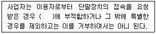
- 기술기준
- 통신규격
- 표준규격
- 설계도서
(정답률: 54%)
73. 다음 중 미래창조과학부장관 또는 방송통신위원회가 정보통신망 이용촉진 및 정보보호 등에 관한 시책을 수립함에 있어 어느 계획과 연계되도록 하여야 하는가?
- 전기통신 기본계획
- 정보통신 기본계획
- 국가정보화 기본계획
- 초고속정보통신망 기본계획
(정답률: 41%)
74. 다음 중 정보통신공사의 총 공사금액에 해당하는 감리원 배치가 잘못된 것은?
- 80억 : 특급감리원
- 35억 : 고급감리원
- 7억 : 초급감리원
- 3억 : 초급감리원
(정답률: 77%)
75. 다음 건축물 중 집중구내통신실을 확보하여야 하는 것은?
- 단독주택
- 공동주택
- 다가구주택
- 야외공연장
(정답률: 74%)
76. 방송통신설비에 대한 기술기준 고시에 의거하여 교환설비나 전송설비, 전산설비 등이 설치되는 장소를 무엇이라 하는가?
- 전화국
- 통신기계실
- 옥외통신실
- 무선국
(정답률: 83%)
77. 다음 문장의 괄호 안에 들어갈 내용으로 가장 적합한 것은?
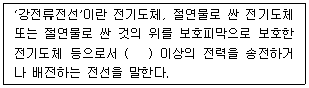
- 200볼트
- 300볼트
- 400볼트
- 500볼트
(정답률: 81%)
78. 다음 중 감리에 대한 설명으로 적합하지 않은 것은?
- 발주자의 위탁을 받은 용역업자가 대행한다.
- 설계도서 및 관련규정의 내용대로 시공되는지 여부를 감독한다.
- 품질관리, 시공관리 및 안전관리에 대한 지도 등을 대행한다.
- 공사 수급인의 권한을 대행하는 것을 말한다.
(정답률: 66%)
79. 국제 전기통신의 효율적이고 호환성있는 연동성을 보장하는 무선 시스템 및 기술설비의 성능 표준을 권고하는 등의 역할을 하는 국제무선통신자문위원회는?
- ITU-T
- ITU-R
- ISO
- IEc
(정답률: 59%)
80. 다음 중 전력유도로 인한 피해가 없도록 전송설비 및 선로설비의 전력유도 전압에 대한 방지조치 대상 제한치로 잘못된 것은?
- 상시 유도위험종전압 : 60[V]
- 기기 오동작 유도종전압 : 15[V]
- 이상시 유도위험전압 : 300[V]
- 잡음전압 : 0.5[mV]
(정답률: 66%)
직렬형 정전압 회로는 출력단자가 단락되더라도 트랜지스터가 파괴되지 않는다는 특징이 있다. 이는 출력단자가 단락되면 전류가 흐르지 않아 트랜지스터 내부의 발열이 줄어들기 때문이다. 따라서 이 회로는 출력단자의 단락에 대한 안정성이 높다는 장점이 있다.